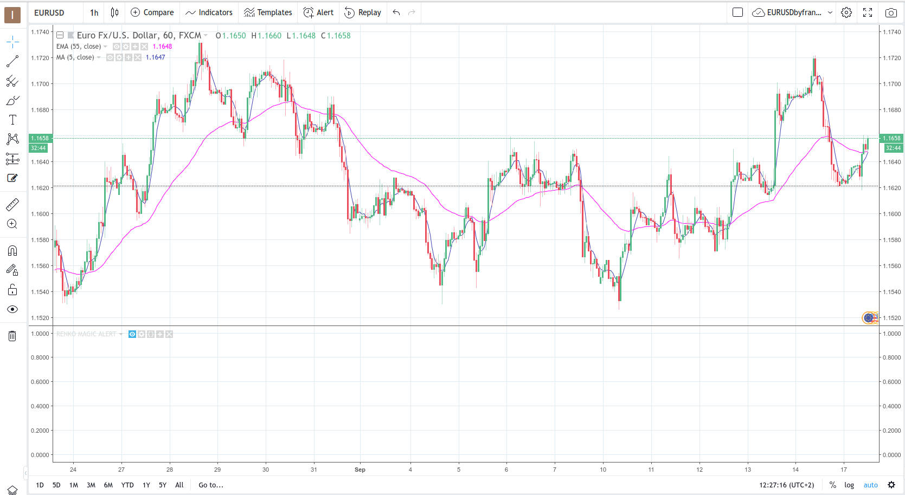

How to deploy an Apache Server in a VPC cluster on AWS using Terraform
Posted on October 28, 2021 in Infrastructure • 1 min read
This post shows how to create an live running Apache webserver on AWS using terraform. The advantage of this method is to be able to use a repeatable method to spin up infrastructure for software deployment as the business grows. It also creates a clear, detailed and easily transferrable information about the deployment architecture and the infrastructure in use at each point in time for any interested developer in the organization.
Setup the alert first!
Insert indicator on chart
Lets say we went to be alert on a MA cross between the 5-period moving average and the 55-period exponential moving average on the 1hr EUR-USD chart. First we set-up our chart in trading view by including all the required indicators as shown below:

Create the alerts based on the indicator
Choose the alert condition, in the image below we have chosen to be alerted when ever there is cross between the MA-5 and the EMA-55 on the 1hr EUR-USD chart. We set
Conclusion
Now the label just tags all emails we recieve from Tradingview and forwards them to our phone by MMS. A list of message gateways for some mobile phone carriers can be found here at the time of this writing. Please note that the forward address has to be verified to become activated by typing the code recieved from gmail to your mobile phone via MMS. In the next article, we show a special case where we can read and forward our emails by SMS using google scripts.